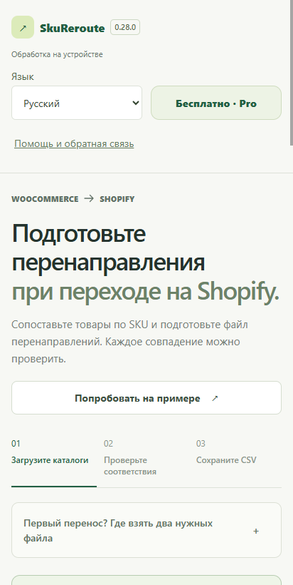

Практическая проверка перед миграцией
Те же товары.
Новый магазин.
Понятный план редиректов.
Переезжаете с WooCommerce на Shopify? Начните с настоящих старых адресов и точных SKU. Проверьте спорные совпадения до импорта редиректов.
SkuReroute для Android доступен в Google Play. Начните бесплатно: до 20 редиректов за один экспорт.
Открыть SkuReroute в Google PlayПерейти к четырём проверкам ↓
Один товар. Один проверенный адрес.
Вымышленный учебный пример. Храните SKU как текст, чтобы не потерять нули в начале.
- Точный SKU
001-MUG- Старый путь
/catalog/stoneware-mug/- Новый адрес
/products/stoneware-mug
Redirect from,Redirect to
/catalog/stoneware-mug/,/products/stoneware-mugАдреса учебные. Не импортируйте этот пример в настоящий магазин.
Четыре проверки до импорта
- Экспортируйте оба каталога.
Сохраните исходные файлы. Нужны точный SKU и настоящий старый URL товара: название товара само по себе не подтверждает адрес. - Разберите неоднозначные совпадения.
Проверьте повторяющиеся SKU, варианты товара и разные адреса назначения. SkuReroute помогает просмотреть совпадения; спорные случаи нужно сверить с реальными товарами. - Проверьте адреса и существующие правила.
Откройте новую страницу товара. Проверьте текущие редиректы и не обслуживает ли старый путь действующую страницу. Избегайте конфликтующих адресов и цепочек переходов. - Импортируйте в Shopify и проверьте переходы.
Скачайте проверенный CSV, самостоятельно импортируйте его в Shopify и откройте несколько характерных старых ссылок в опубликованном магазине. Сохраните таблицу соответствий.
Чем помогает SkuReroute
Импортируйте каталоги, сопоставьте товары по SKU, разберите проблемы и экспортируйте файл редиректов. Обработка идёт на устройстве. Приложение не переносит магазин и не применяет правила в Shopify самостоятельно.
Начните бесплатно
Импорт и проверка каталога, сохранение проектов и экспорт до 20 редиректов за раз.
Pro — разовая покупка
Неограниченный экспорт редиректов и полный отчёт сопоставления. Цена для вашей страны отображается в Google Play. Купленный Pro остаётся навсегда; для восстановления после переустановки используйте тот же аккаунт Google.
Языки интерфейса: English, Русский, Українська, Deutsch, Français, Español, 简体中文.
План редиректов помогает работать осознанно, но не гарантирует сохранения позиций в поиске и отсутствия всех проблем переезда. Проверьте настройки своего магазина.
SkuReroute для Android доступен в Google Play. Начните бесплатно: до 20 редиректов за один экспорт.
Открыть SkuReroute в Google PlayИнструкции платформы
Для импорта и остальных этапов миграции используйте актуальную справку Shopify. Эта инструкция посвящена подготовке редиректов товаров.